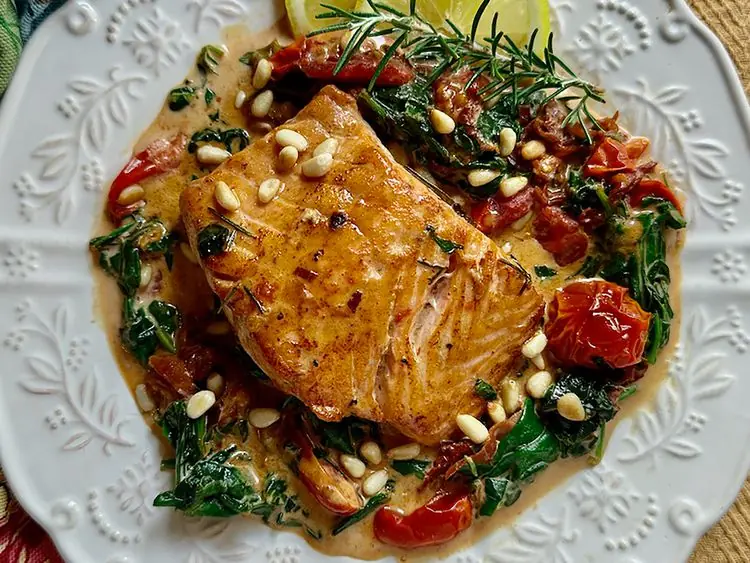

Tuscan Salmon
- Total time25 mins
- Serves4
- Ingredients17
- Steps7

Ingredients
- 4 (5 ounce) salmon filets
- salt and freshly ground black pepper to taste
- 1 tablespoon olive oil
- 1 tablespoon unsalted butter
- 2 or 3 short rosemary sprigs, plus more for garnish
- 1/3 cup chopped prosciutto
- 1 green onion, finely chopped
- 1 to 2 garlic cloves, minced
- 1 pinch red pepper flakes, or to taste
- 1/2 lemon, zested
- 1/2 cup dry white wine
- 1 cup cherry tomato halves
- 1 (10 ounce) package fresh spinach, torn
- 1/2 cup heavy cream
- 1 tablespoon olive oil for drizzling, or as needed
- lemon slices
- lightly toasted pine nuts (optional)
Directions
- Pat salmon filets dry with paper towels and season both sides with salt and pepper.
- Melt butter in a large skillet over medium heat; add olive oil. When butter stops sizzling, swirl the skillet to combine. Add 2 or 3 rosemary sprigs to the skillet, to flavor the oil.
- Add salmon and cook until salmon is lightly browned and flakes when a fork is gently inserted, about 3 minutes per side. (If salmon filets are thinner than 1 1/2 inches, this may take less time.) An instant read thermometer, inserted near the center, should read 145 degrees F (63 degrees C). Remove from the skillet, and keep warm.
- To the same skillet with rosemary, add chopped prosciutto, green onion, garlic, red pepper flakes, and lemon zest, and cook for 1 minute or until fragrant.
- Add white wine and cook until the liquid evaporates. Add tomatoes and cook, stirring, 2 to 3 minutes. Add spinach and toss in the skillet until bright green and barely wilted, 2 to 3 minutes.
- Stir in cream, and season with salt and pepper. Cook until sauce bubbles, about 2 minutes, and remove cooked rosemary sprigs.
- Serve salmon on a bed of vegetables and sauce, and drizzle with a little olive oil. Garnish with lemon slices, fresh rosemary sprigs, and toasted pine nuts, if desired.
Recipe credit: allrecipes.com